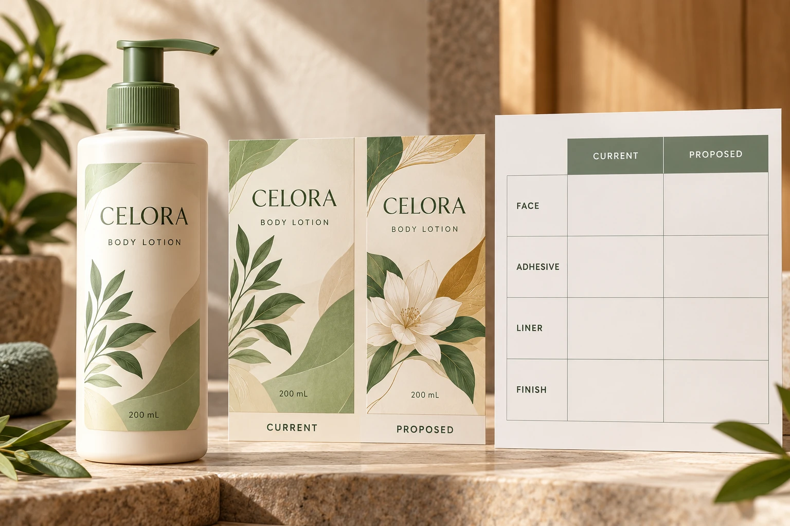

Ask for a comparison with named references
Obtain the current construction and proposed alternative references, including document versions and any known limitations. Ask the converter to state what remains the same, what changes and what has not yet been confirmed. Do not fill an unknown field with the word equivalent.
Avery's explanation of label layers distinguishes the face stock, adhesive, release coating and liner. A finished printed label may also have relevant print treatments and protective finishes. Identifying only the visible film leaves other parts of the supplied construction unresolved.
Include the proposed print and finish combination. A substitute raw stock is not automatically the same finished label when the coating, ink or protective layer changes. Ask the actual production party which combination it proposes to deliver.
Map each change to the decision it might reopen
A face-stock change can prompt questions about appearance, stiffness, conformity or print preparation. An adhesive change prompts a surface and use review. A liner change may matter to converting, detection or dispensing even though the liner does not remain on the bottle.
These are review routes, not claims that every substitution causes a problem. Have the supplier and receiving operator explain which differences are relevant to this job. A documented unchanged component can help narrow the work, provided the complete combination remains identified.
Use the caliper and basis-weight guide when specification numbers cannot be compared. Matching one thickness figure does not establish equivalent surface behavior or operator compatibility. Conversely, a numerical difference does not by itself prove that a candidate is unsuitable.
Separate supplier reasoning from project acceptance
Ask the supplier why the candidate is proposed and what evidence supports the recommendation. A material data sheet, a related application example and a representative project sample offer different kinds of support. Record which one is actually available.
The brand decides whether appearance meets its reference. The relevant technical parties assess the material and application questions. The receiving site confirms the supported operating arrangement. Purchasing ensures that these decisions refer to the same proposed construction and order.
Do not let a discussion about availability silently become authorisation to supply a different material. Record whether the alternative is being considered, sampled or released. If the original and substitute might both be supplied, identify how each will be distinguished and what approvals apply.
Build a change-to-evidence matrix
This editorial matrix helps target the review. It does not prescribe a universal requalification test or acceptance limit.
| Component or condition | Current versus proposed | Evidence question |
|---|---|---|
| Face stock | Identified references and relevant properties | Does appearance and form still meet the brief? |
| Adhesive | Actual adhesive and surface assumptions | Which bottle/use evidence remains applicable? |
| Liner | Type and construction reference | Does the receiving operation accept the supplied web? |
| Print surface | Relevant coating or treatment | Has the printer confirmed the output route? |
| Protective finish | Exact retained or changed finish | Which appearance and handling checks apply? |
| Later operation | Coding or another defined process | Does its owner accept the changed surface? |
| Release | Named approvers and remaining conditions | What may be supplied on this order? |
Fill the comparison first. For each changed or unknown field, assign a review owner and specify the missing evidence. Obtain the relevant sample or explanation, document the result and attach the accepted construction to the order. Keep an unresolved row open rather than treating a general approval email as an answer to every question.
The adhesive sample-planning guide helps make bottle observations comparable. Use it where the substitution affects that interface; do not repeat unrelated tests merely to make the review appear more thorough.

Compare the actual alternatives and their limits
One hypothetical project needs a short presentation run with a defined appearance requirement and a supported hand-application route. An identified substitute may be acceptable after a focused review. That approval should state the limited scope rather than imply suitability for every later production use.
Another project relies on an established automated line and a later coding operation. A similar-looking replacement can reopen those interfaces. The practical comparison is the supported substitute route against the actual availability and schedule of the original, including the work needed to resolve remaining questions.
For custom cosmetic labels, send the container, artwork, dimensions, quantities and both material references. Identify the changed components and existing acceptance records. The inquiry form prepares a message; send data sheets and sample records by email or WhatsApp. Ask for a documented proposal before accepting the word equivalent as the entire specification.